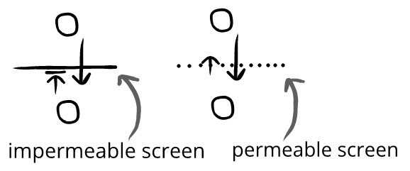

We can use emotion networks to think more about spectator entertainment:
Rosie and her friends walk through the creepy old house.
We can add separate spectators of this emotion network:
Trevor and Yasmin are watching Squeal II(←Trevor and Yasmin observe an emotion network)
Rosie and her friends walk through the creepy old house.
When Trevor and Yasmin watch Squeal II, they can receive evaluatory information from the characters, but the characters can't from them.
Trevor and Yasmin are watching Squeal II
Rosie and her friends walk through the creepy old house. They get a fright and jump, but it's just a broom falling over. Rosie laughs.(←Trevor and Yasmin can read her evaluatory information)
She wanders over to a dusty jewelry box. She pauses and bites her lip nervously.
Trevor:*frustrated*"Don't open it!"(←Rosie can't read Trevor's evaluatory information)
Above, there's a screen that filters evaluatory information. This screen is the barrier that creates these different emotion networks.
Evaluatory screens be impermeable or permeable. This is why shouting at actors in a movie has a different result than shouting at actors in a play:

We can see all kinds of evaluatory screens:
A play has a pretend screen, where the actors receive evaluatory information but, by-and-large, carry on as if they didn't receive any
A movie has as absolute screen, where the characters will never receive evaluatory information
A tinted car window is a removable screen, where we could take an action to create a two-way flow of evaluatory information
An athletic game has a concentration screen, where participants need so much focus that they can't focus on the audience
(and so on)
An evaluatory screen doesn't mean something is spectator entertainment. Something is only spectator entertainment when the priority is on one group—and there may or may not be a screen.
Screens help us think about desynchronized evaluations.
Usually, it's destructive to emotion networks when there are desynchronized evaluations—which is why groups break apart if some people laugh while others cry, and there isn't movement toward evaluatory synchronization.
But when there is a screen, these desynchronized evaluations aren't immediately destructive—since it's not all happening on the same emotion network. Instead, we can laugh at a movie, memory, or people who can't receive our evaluatory information—and the screen allows this desynchronization to happen in a context that can feel free from the normal constraints of an emotion network.
That's it for this chapter!
Chapter summary
By default, we are mutually reactive to each other and try to synchronize evaluations. However, when just a few members of an emotional system are prioritized, it becomes what we're calling spectator entertainment.
_-_Google_Art_Project.jpg "Ending art")